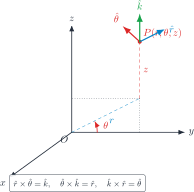
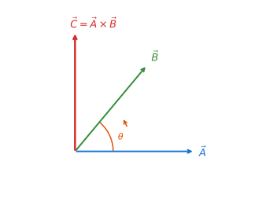
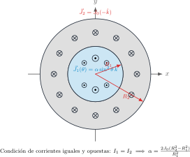
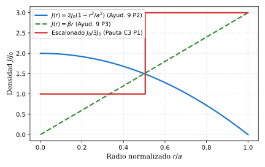
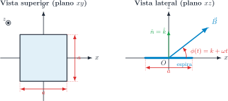
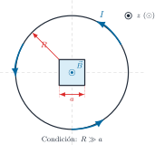
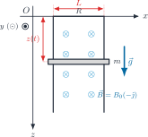
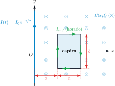
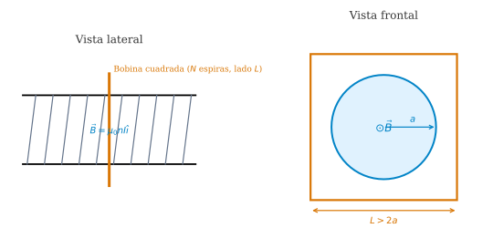
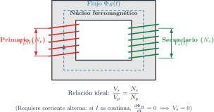

mod0_coords
16.2 KB

Coordenadas Cilíndricas y Versores Canónicos
Punto P(r, θ, z), versores r̂, θ̂, k̂ y relaciones algebraicas de producto cruz.
mod0_cross_product
13.6 KB

Producto Cruz y Regla de la Mano Derecha
Vectores A, B, ángulo θ y vector ortogonal C = A × B.
mod10_maxwell_capacitor
62.9 KB

Condensador Circular de Maxwell y Corriente de Desplazamiento
Vistas lateral y frontal: placas circulares radio R, lazo amperiano Γ, disco plano S₁ y bolsa interior S₂.
mod1_sim2_geometry
29.5 KB

Superposición: Arco Circular y Segmento Finito Paralelo a z
Arco de radio R en plano xy (4to cuadrante) y segmento rectilíneo de longitud 4R en x=2R.
mod1_wire_bfield
30.5 KB

Campo Magnético de Cable Infinito y Circulación Azimutal
Líneas de campo concéntricas, vector B(r) = (μ₀I / 2πr)θ̂ y regla de la mano derecha.
mod2_ayud9_p1_coaxial
19.4 KB

Cable Coaxial Asimétrico (Radios R, 2R, 4R)
Núcleo interior J₁ = J₀k̂ (⊙), aislante intermedio y cascarón exterior J₂ = 2J₀(-k̂) (⊗).
mod2_ayud9_p3_superposicion
42.7 KB

Superposición Fuera de Eje: Cilindro Desplazado y Cable Infinito
Cilindro macizo en (-a, 0) con J = βr' y cable infinito en (a, -a) con punto de observación en el origen O.
mod2_ayud9_p4_angular
29.7 KB

Densidad con Dependencia Angular J₁(θ) = α sin²θ k̂ y Cascarón
Cilindro interior R₁ con variación angular y cascarón exterior R₂ con densidad uniforme J₀(⊗).
mod2_coaxial_stepped
23.9 KB

Efecto Pelicular Escalonado: Secciones r ≤ R/2 y R/2 < r ≤ R
Cilindro con densidad escalonada J₀ y 3J₀, radios R/2 y R, corriente saliente ⊙.
mod2_j_profiles
28.1 KB

Perfiles de Densidad de Corriente J(r)
Comparación de perfiles: Uniforme (J₀), Parabólico 2J₀(1 - r²/a²) y Escalonado (J₀ y 3J₀).
mod3_toroid_simulacro
26.5 KB

Toroide Ideal Rectangular (Vista Superior y Corte Transversal rz)
Radios a y b, altura h, N espiras, campo azimutal B y cable axial morado con corriente Ic.
mod4_ayud10_p1_rotating
27.8 KB

Espira Cuadrada en Campo Magnético Rotatorio
Espira de lado a en plano xy y campo B con ángulo de elevación variable ϕ(t) = k + ωt.
mod4_ayud10_p2_concentric
14.7 KB

Espira Circular con Espira Cuadrada Concéntrica en su Centro
Espira circular de radio R con corriente I(t) y pequeña espira cuadrada central de lado a << R.
mod4_ayud11_p3_spacetime
24.8 KB

Rectángulo Conductor en Campo Espacial y Temporal B(y,t) con ⊙
Campo B(y,t) = αy² e^(-βt) k̂ sobre rectángulo H × L con lado inferior ubicado en y = C.
mod4_faraday_moving_loop
24.5 KB

Espira Rectangular Alejándose de Cable Recto Infinito
Cable infinito en eje y con corriente I, espira de lados a × b con velocidad v y distancia d(t).
mod5_ayud10_p4_carrito
27.2 KB

Carrito Conductor Ingresando a Región con Campo Magnético Uniforme
Carrito de masa m, ancho a, largo w y velocidad inicial v₀ ingresando a zona con B₀k̂ (⊙).
mod5_motional_emf_rails
18.1 KB

Varilla Conductora en Rieles Verticales con Gravedad y Campo Entrante
Rieles verticales separados distancia L, varilla de masa m cayendo bajo gravedad g, campo B entrante ⊗.
mod6_ayud11_p1_solenoids
18.7 KB

Dos Solenoides Concéntricos Ideales Muy Largos (R y 3R)
Bobina interior de radio R y Ni vueltas con corriente I(t), bobina exterior de radio 3R y Ne vueltas.
mod6_ayud11_p2_wire_rect
29.5 KB

Alambre Infinito con Corriente Exponencial y Rectángulo Conductor
Cable sobre eje y con I(t) = I₀ e^(-t/τ) y espira rectangular de lados a × b a distancia a del cable.
mod6_mutual_solenoid_square
29.7 KB

Solenoide Coaxial con Bobina Cuadrada Exterior
Solenoide ideal de radio a rodeado por bobina cuadrada coaxial de N espiras y lado L > 2a.
mod6_pauta_p2_rollo
32.3 KB

Rollo Plano Circular con Pequeña Espira Concéntrica Central
Rollo plano de N vueltas de radio R sobre una mesa con pequeña espira circular concéntrica de radio r << R.
mod6_solenoid_tilted_loop
39.8 KB

Bobina Larga con Espira Inclinada en Ángulo α
Solenoide de radio a y espira circular de radio b inclinada ángulo α entre eje longitudinal y plano de la espira.
mod6_transformador
40.4 KB

Transformador Ideal con Núcleo Ferromagnético Cerrado
Núcleo ferromagnético toroidal cuadrado, devanado primario Np y devanado secundario Ns.
mod8_switch_circuit
19.6 KB

Circuito Transiente con Interruptor de 2 Posiciones (R, C, L, ε)
Fuente de fem ε, resistencia R, interruptor de 2 posiciones, rama superior con C y rama inferior con L y R.
mod9_rlc_circuit
39.0 KB

Circuito RLC Serie Oscilante (Régimen Amortiguado)
Circuito serie con inductor L, resistencia R, capacitor C, carga q(t) y corriente i(t).